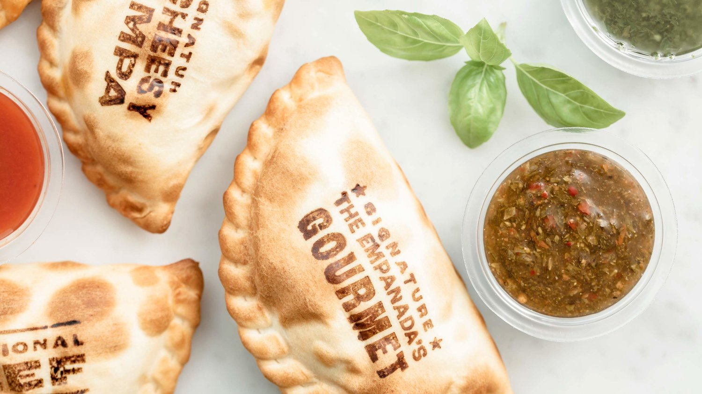

Las empanadas son ideales para comer en cualquier momento del día, son saludables, riquísimas y la mejor opción para una comida "al toque".
Permanecen calientes hasta 30 minutos después de su preparación y no pierden su calidad en absoluto.
A diferencia de la pizza, por ejemplo, podés elegir la empanada que más te guste, y si la compartís con amigos o familiares, ¡Cada uno elige su favorita!
